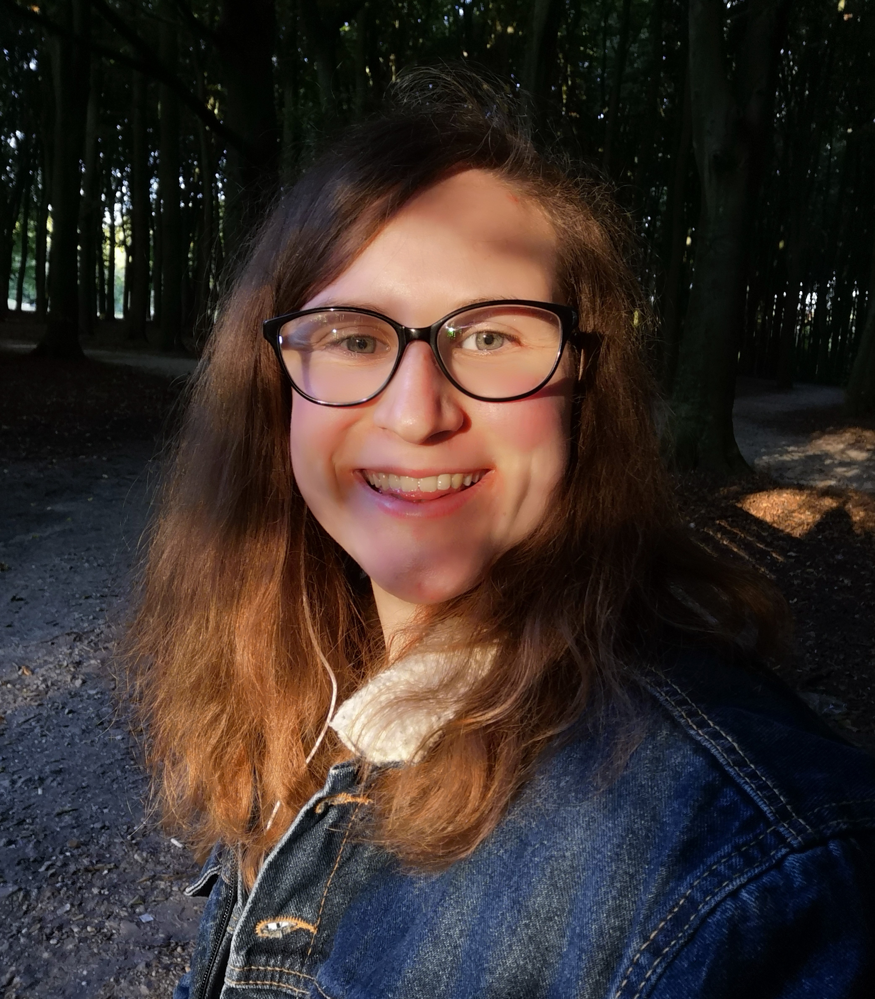

Naomi van Gessel
Leergierig
Nieuwsgierig
Zelfstandig
Ik ben een nieuwsgierig persoon die zoveel mogelijk wilt weten en leren. Zo ben ik bezig met het leren van keyboard spelen en het leren van een nieuwe taal, namelijk spaans.
Vrije tijd
Naast bezig zijn met mijn studie vind ik het leuk om in mijn vrije tijd mij bezig te houden met onder andere schilderen, tekenen en het kijken van series en films. Ook heb ik met 6 andere meiden een update account voor een band genaamd Roadtrip waarvoor we regelmatig een meetup organiseren voor andere fans om zo nieuwe vrienden te maken. Hiervoor ontwerp ik meestal de Instagram post of maak een flyer om te gebruiken als promotie. Daarnaast maak ik van al het gefilmde materiaal een video in Premiere Pro wat gebruikt kan worden om een impressie te geven voor de fans die niet zijn gekomen of van plan zijn een volgende keer te komen. Daarnaast vind ik het ook erg leuk om naar concerten te gaan van mijn favoriete artiesten.
Hieronder is een van de video's te zien die ik heb gemaakt van een van de meetups.